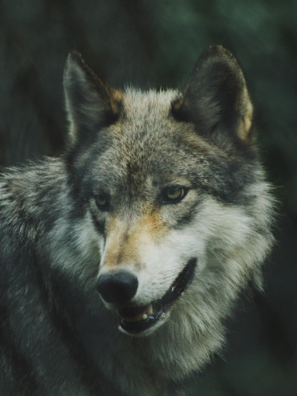

Animais Fantásticos
-

-

-

- 
-

-

Raposa
Esquilo
Urso
Lobo
O lobo (também chamado de lobo-cinzento; nome científico: Canis lupus) é uma espécie de mamífero canídeo do gênero Canis. É um sobrevivente da Era do Gelo, originário do Pleistoceno Superior, cerca de 300 mil anos atrás. É o maior membro remanescente selvagem da família canidae. O sequenciamento de DNA e estudos genéticos reafirmam que o lobo-cinzento é ancestral do cão doméstico (Canis lupus familiaris), contudo alguns aspectos desta afirmação têm sido questionados recentemente. Uma série de outras subespécies do lobo-cinzento foram identificadas, embora o número real de subespécies ainda esteja em discussão. Os lobos-cinzentos são tipicamente predadores ápice nos ecossistemas que ocupam. Embora não sejam tão adaptáveis à presença humana como geralmente ocorre com as demais espécies de canídeos, os lobos se desenvolveram em diversos ambientes, como florestas temperadas, desertos, montanhas, tundras, taigas, campos e até mesmo em algumas áreas urbanas. O lobo-cinzento (Canis lupus), o lobo-vermelho (Canis rufus), o lobo-etíope (Canis simensis) e o lobo-dourado (Canis anthus) são as únicas quatro espécies classificadas como lobos. Os demais lobos correspondem a subespécies derivadas dessas quatro espécies.